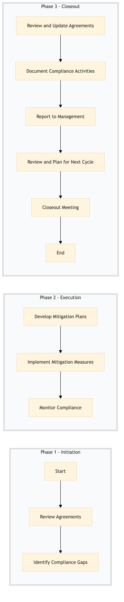

| Role | Steps |
|---|---|
| Legal Counsel | 1.1 3.1 |
| Compliance Officer | 1.2 2.1 2.3 3.2 3.3 3.5 |
| Department Heads | 2.2 3.4 |
| Staff Members | 2.2 |
| Step | Name | Role | System | Input | Output | KPI | Dec? | Exc? | Pain Point / Risk |
|---|---|---|---|---|---|---|---|---|---|
| 1.1 | Review Agreements | Legal Counsel | Oracle OPERA Cloud, SAP S/4HANA | Franchise & Management Agreements | Agreement Review Report | Less than 5 working days | N | Y | Complexity of agreements and potential oversight of clauses. |
| 1.2 | Identify Compliance Gaps | Compliance Officer | Microsoft Power BI, Salesforce | Agreement Review Report | Compliance Gap Analysis | Less than 3 working days | N | Y | Data accuracy and completeness for analysis. |
| 2.1 | Develop Mitigation Plans | Compliance Officer, Department Heads | Oracle OPERA Cloud, Workday HCM | Compliance Gap Analysis | Mitigation Plan Document | Less than 7 working days | N | Y | Coordination across departments for effective mitigation. |
| 2.2 | Implement Mitigation Measures | Department Heads, Staff Members | Oracle OPERA Cloud, IDeaS G3 RMS | Mitigation Plan Document | Confirmation of Implementation | Less than 10 working days | Y | N | Resistance to change and adherence to new protocols. |
| 2.3 | Monitor Compliance | Compliance Officer, Department Heads | Oracle OPERA Cloud, Microsoft Power BI | Mitigation Plan Document | Compliance Monitoring Report | Daily monitoring with weekly reporting | Y | N | Real-time data availability and accuracy. |
| 3.1 | Review and Update Agreements | Legal Counsel, Compliance Officer | Oracle OPERA Cloud, SAP S/4HANA | Compliance Monitoring Report | Updated Franchise & Management Agreements | Less than 15 working days | N | Y | Negotiating changes with franchise partners. |
| 3.2 | Document Compliance Activities | Compliance Officer, Department Heads | Oracle OPERA Cloud, Salesforce | Mitigation Plan Document, Compliance Monitoring Report | Compliance Documentation Archive | Less than 5 working days | N | Y | Maintaining accurate and organized documentation. |
| 3.3 | Report to Management | General Manager, Compliance Officer | Microsoft Power BI, Salesforce | Compliance Documentation Archive | Management Report | Less than 5 working days | N | Y | Summarizing complex compliance data for management. |
| 3.4 | Review and Plan for Next Cycle | General Manager, Compliance Officer | Oracle OPERA Cloud, Salesforce | Management Report | Compliance Action Plan for Next Year | Less than 10 working days | N | Y | Forecasting future compliance needs and resources. |
| 3.5 | Closeout Meeting | General Manager, Compliance Officer, Legal Counsel | Microsoft Teams, Oracle OPERA Cloud | Compliance Action Plan for Next Year | Meeting Minutes | Less than 1 working day | N | Y | Ensuring all stakeholders are aligned on the next steps. |
A process to ensure compliance with Franchise & Management Agreements at a Marriott full-service hotel.